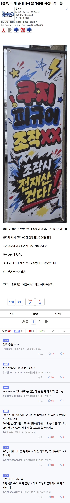

(추가)
업체 해명 :
확인 결과, 쿠지 세팅 과정에서 바쁜 나머지 직원 한명의 실수로 A상 경품 한장이 누락된 것을 CCTV를 통해 확인 하였습니다.
해당 사실을 확인한 즉시 관련 고객님들께 상황을 설명,고의성 없음을 확인 후 보상을 모두 완료후 지금 정상 재오픈 하여 고객을 맞이하고 있습니다
https://www.instagram.com/p/DcGGwhxkzNx
왜 항상 이런 실수는 기업이나 가게 측이 손해 안나고 이득이 되는 쪽으로 일어나는걸까?
댓글
수집 당시 댓글 11개
게이야 · 3 일 전
저거 재오픈하고 똑같은일 벌어지면 도파민 max일듯ㅋㅋ
소고긔 · 3 일 전
귀신같이 a가 빠져부러 ㅋㅋ
창원시진해구이동거주중 · 3 일 전
실수...
방구전문가 · 3 일 전
ㅋㅋㅋㅋ자체쿠지만 저런줄 아는 호구없재???
homage · 3 일 전
다른 것도 다 까봤어야 했는데 ㅋㅋ
몽실 · 3 일 전
전재산 0원
시공의포옥풍 · 3 일 전
쿠지가 뭐야?
딤송빠레 · 2 일 전
제비뽑기!
봄동비빔밥 · 2 일 전
중요한 실수는 ㅋㅋ
헬다이버 · 2 일 전
너 잘 걸렸다 ㅋㅋ
이중성이야 · 1 일 전
이게 진짜 해명 맞습니까